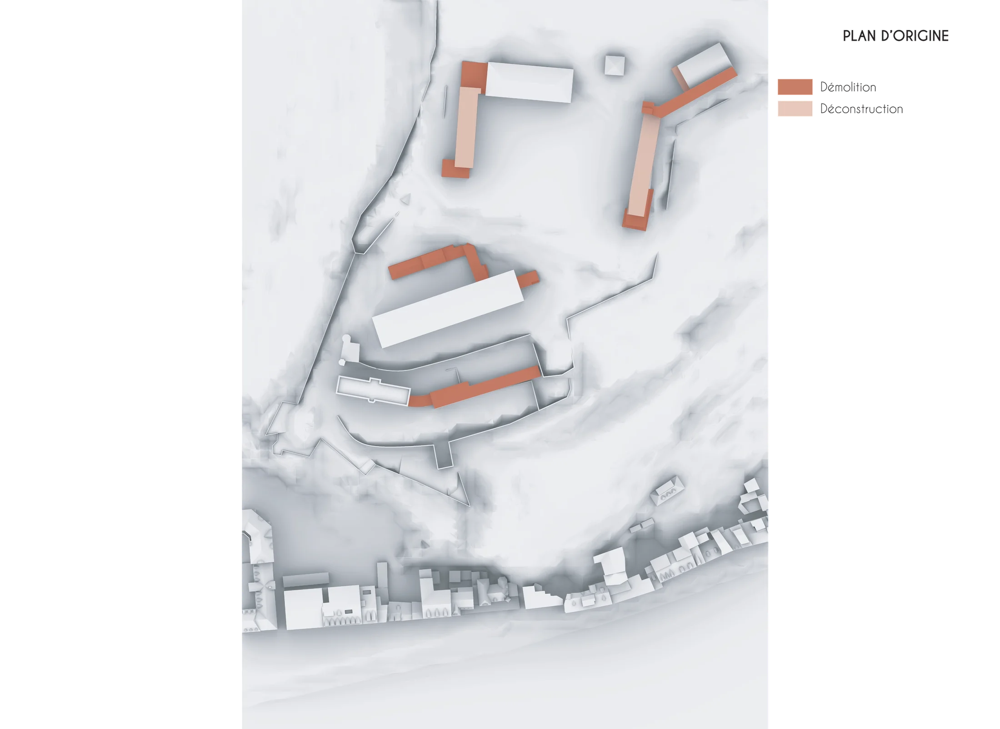
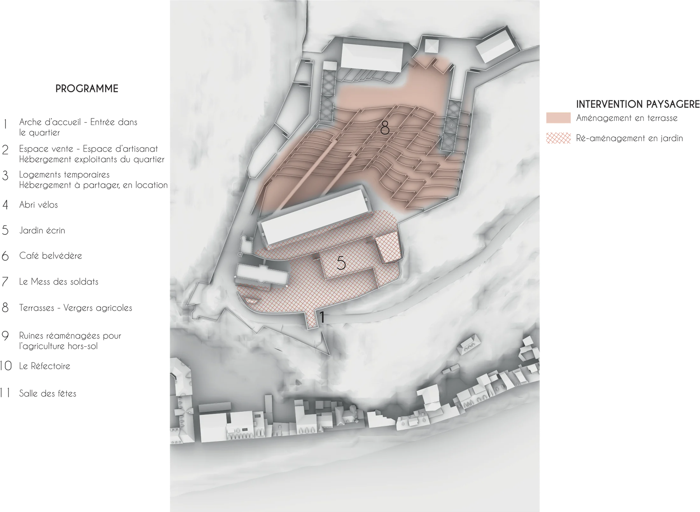
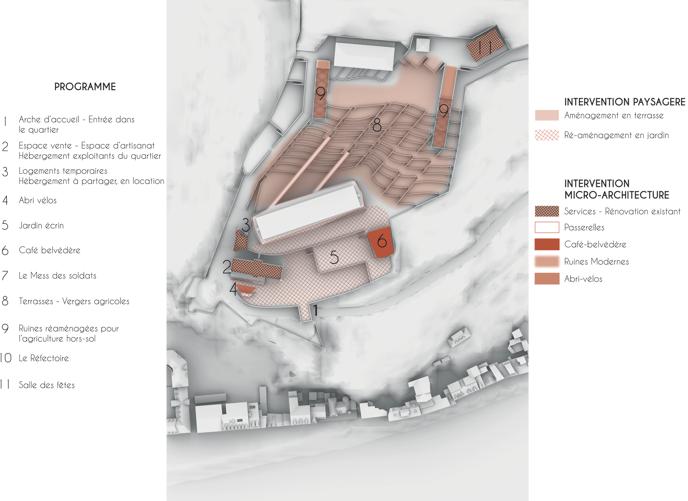
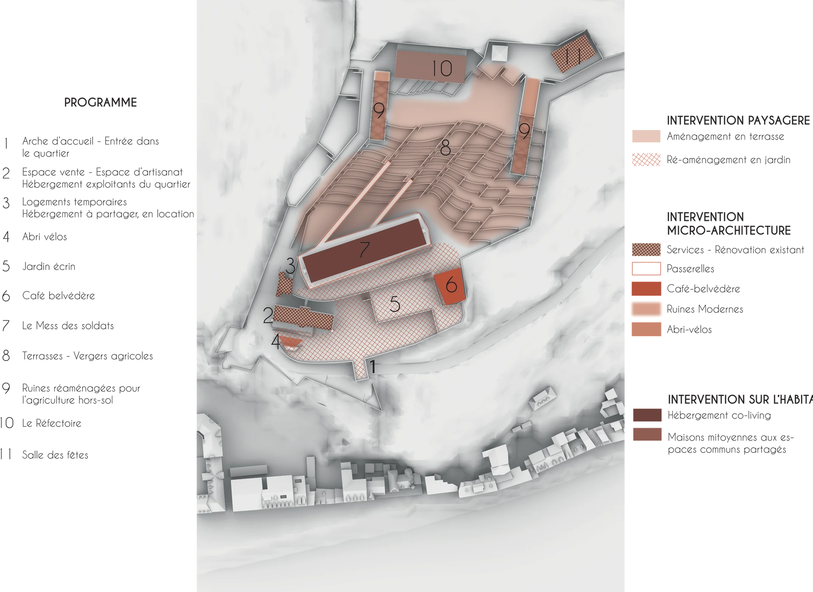
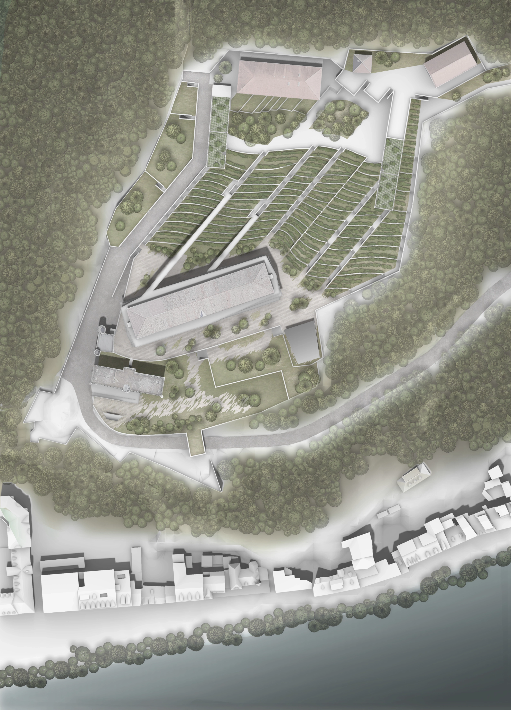
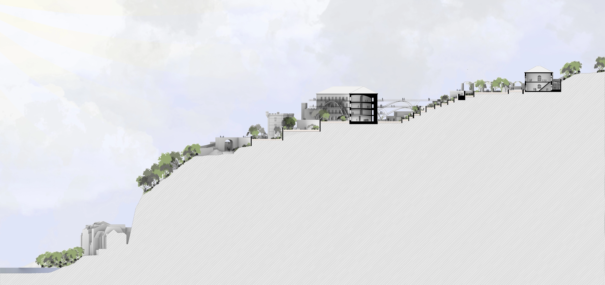

Réhabilitation de la Bastille surplombant Grenoble
Sujet Europan 2021
Ce projet propose la reconversion d'une ancienne caserne militaire installée sur les hauteurs de la Bastille, à Grenoble. La démarche s'appuie sur une démolition partielle des volumes les moins qualitatifs, la mise en place d'une agriculture urbaine en terrasses sur l'ancien glacis militaire, et la restauration patrimoniale des bâtiments et fortifications existants.
L'ensemble cherche à réconcilier un site historique et défensif avec de nouveaux usages tournés vers la ville, le paysage et la production locale.





